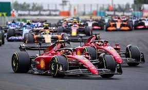
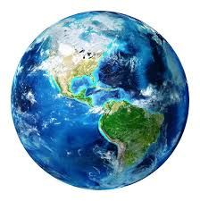
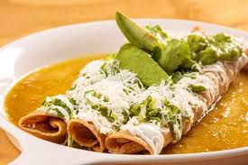

-

Lecturas - Romanticas
- Narraciones
- Conocimiento filosofico
-

Automovilismo - Formula 1
- Arrancones
-

Países por conocer - Canada
- Islandia
- Ucrania
-

Comida - Enchiladas
- Cochinita Pibill
Las lecturas son para seguir fomentando mi conocimiento y otras mas por curiosidad que al final terminando nutriendo el conocimiento
Es mi pasión número 1, es parte de mi motor para seguir esforzandome y conseguir todos sueños de conseguir mi auto preferido
Estos paises son metas que cumplir para poder visitar, conocer e incluso poder vivir un tiempo por alla
La comida favorita, que provine principalmente de como cocina mi mamá